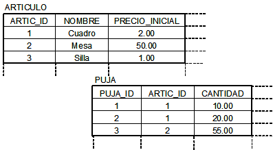
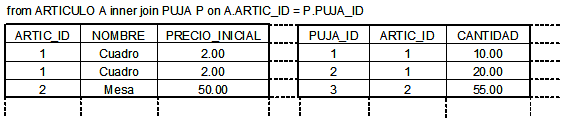
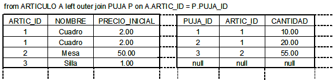

Consultas. HQL
En esta sesión hablaremos sobre cómo realizar operaciones sencillas sobre la base de datos con Hibernate, mediante el uso del lenguaje de consultas de Hibernate: HQL, y también utilizando SQL.
Consultas y procesamiento de resultados
Si no conocemos los identificadores de los objetos que estamos buscando, necesitamos realizar una query (operación de consulta a la base de datos). Hibernate soporta un lenguaje de consultas orientado a objetos denominado HQL, del que hablaremos en siguientes apartados. También podemos expresar las consultas utilizando el SQL nativo de nuestra base de datos,con un soporte adicional desde Hibernate para la conversión de result sets en objetos.
Tanto las consultas HQL como las SQL se representan mediante una instancia de org.hibernate.Query. Esta interfaz proporciona métodos para enlazado de parámetros, manejo de result sets, y para la ejecución de las consultas. La forma de obtener una query es siempre a través de la Session actual. Por ejemplo:
List pujas = session.createQuery(
"from Puja as puja where puja.fecha < ?")
.setDate(0, date)
.list();
Articulo artic = (Articulo) session.createQuery(
"select puja.articulo from Puja as puja where puja = ?")
.setEntity(0, pj)
.uniqueResult();
Una query se ejecuta normalmente invocando al método list(), el resultado de la consulta se carga en su totalidad en memoria. Las instancias de entidades recuperadas por una query están en estado persistente. El método uniqueResult() es útil cuando la consulta debe recuperar un único objeto. Vamos a ver algunas de las operaciones más habituales cuando realizamos alguna consulta a la base de datos.
ITERACIÓN DE RESULTADOS
En ocasiones, podemos utilizar el método iterate() en lugar de list() para mejorar el rendimiento en el caso de que las instancias devueltas por la consulta ya estén en la sesión o en la caché de segundo nivel (second-level cache: es una caché a nivel de proceso, mientras que la caché de primer nivel es a nivel de transacción; No vamos a hablar aquí sobre las formas de almacenamiento cache de Hibernate, para ello podéis consultar el manual de referencia de Hibernate, en el apartado 19.2). Ejemplo de iteración de resultados:
Iterator pujas = session.createQuery(
"from Puja as puja where puja.fecha < ?")
.setDate(0, date)
.iterate();
while (pujas.hasNext() ) {
Puja puja = (Puja) pujas.next();
//hacer algo que no podemos expresar con la consulta
...
}
CONSULTAS QUE DEVUELVEN TUPLAS
Las consultas de Hibernate a veces devuelven tuplas de objetos, en cuyo caso cada tupla se devuelve como un array, por ejemplo cuando utilizamos la cláusula join:
Query q = session.createQuery("select a from Articulo a join a.pujas p");
Iterator pares = q.list().iterator();
while (pares.hasNext() ) {
Object[] pares = (Object[]) pares.next();
Articulo art = (Articulo) pares[0];
Puja puja = (Puja) pares[1];
}
En este caso, en lugar de una lista de artículos, este consulta devuelve una lista de arrays de objetos. En la posición 0 habrá un Articulo, y en la posición 1 habrá una Puja. Un Artículo particular puede aparecer muchas veces, una vez por cada Puja asociada.
RESULTADOS ESCALARES
Las consultas pueden especificar una propiedad de una clase en la cláusula select. Incluso se puede hacer llamadas a funciones SQL de agregación (SQL aggregate functions). Las propiedades o agregaciones son consideradas como resultados "escalares" (en vez de entidades con su estado persistente). Veamos un ejemplo:
Iterator results = sess.createQuery(
"select articulo.color, min(articulo.fechaAlta), "+
"count(articulo) from Articulo articulo " +
"group by articulo.color")
.list()
.iterator();
while ( results.hasNext() ) {
Object[] row = (Object[]) results.next();
Color type = (Color) row[0];
Date oldest = (Date) row[1];
Integer count = (Integer) row[2];
.....
}
ENLAZADO DE PARÁMETROS
Los métodos de la clase Query permiten enlazar valores a parámetros con nombre, similares a los parámetros ? al estilo de JDBC. Al contrario que JDBC, Hibernate numera los parámetros comenzando por cero. Los parámetros con nombre son identificadores con la forma :name en la cadena de consulta. Las ventajas de los parámetros con nombre son:
- Son insensibles al orden en el que aparecen en la cadena de consulta.
- Pueden aparecer varias veces en la misma consulta.
- Son auto-documentados.
Ejemplos:
Query q = sess.createQuery("from Articulo art where art.name = :name");
q.setString("name", "Cuadro");
Iterator arts = q.iterate();
//lista de parámetros con nombre
List nombres = new ArrayList();
nombres.add("Collar");
nombres.add("Copa");
Query q = sess.createQuery("from Articulo art where art.name in (:listaNombres)");
q.setParameterList("listaNombres", nombres);
List articulos = q.list();
Aunque también podemos utilizar parámetros posicionales:
String queryString = "from Articulo art "
+ "where art.descripcion like ? "
+ "and art.fechaAlta > ? ");
List result = session.createQuery(queryString)
.setString(0, searchString)
.setDate(1, minDate)
.list();
La interfaz Query proporciona métodos para enlazar argumentos para los tipos Hibernate, como setInteger(), setTimestamp(), setDate(),... Un método particularmente útil es el método setEntity(), que permite enlazar con una entidad persistente:
session.createQuery("from Articulo art where art.vendedor = :vendedor")
.setEntity("vendedor", vendedor)
.list();
Sin embargo, también se dispone de un método genérico que nos permite enlazar un argumento de cualquier tipo Hibernate, o incluso tipos definidos por el usuario:
String queryString = "from Articulo art "
+ "where art.vendedor= :vendedor and "
+ "art.descripcion like :desc and "
+ "art.origen like : org;
session.createQuery(queryString)
.setParameter("vendedor", vendedor, Hibernate.entity(User.class) )
.setParameter("desc", descripcion, Hibernate.STRING )
.setParameter("org", origen, Hibernate.custom(Origen.class) )
.list();
PAGINACIÓN
Si necesitamos especificar límites sobre el conjunto de resultados (el máximo número de filas que queremos recuperar y/o la primera fila que queremos recuperar), podemos utilizar los siguientes métodos de la interface Query:
Query q = sess.createQuery("from Articulo art");
q.setFirstResult(20);
q.setMaxResults(10);
List articulos = q.list();
La llamada a setMaxResults(10) limita el conjunto de resultados de la consulta a los siguientes diez objetos comenzando por el que ocupa la veinteava posición (es decir, desde la posición 21 hasta la 30).
RESULTADOS "ENROLLABLES"
Si el driver JDBC utilizado soporta ResultSets scrollables, puede utilizarse la interfaz Query para obtener un objeto ScrollableResults, que permite una navegación flexible por los resultados de la consulta.
Query q = sess.createQuery("select art.nombre, art from Articulo art " +
"order by cat.name");
ScrollableResults artics = q.scroll();
if ( artics.first() ) {
// encuentra el primer nombre en cada página de una lista de artículos
//ordenada alfabéticamente por nombre
firstNamesOfPages = new ArrayList();
do {
String nombre = artics.getString(0);
firstNamesOfPages.add(nombre);
}
while ( artics.scroll(PAGE_SIZE) );
// Ahora obtiene la primera página de artículos
pageOfArtics = new ArrayList();
artics.beforeFirst();
int i=0;
while( ( PAGE_SIZE > i++ ) && artics.next() ) pageOfArtics.add( artics.get(1) );
}
artics.close()
HQL: Hibernate Query Languaje
La recuperación de objetos persistentes de la base de datos es una de las partes más interesantes (y complejas) de Hibernate. Hibernate proporciona varias formas de recuperar objetos de la base de datos:
- Navegando por el grafo de objetos, comenzado por un objeto ya cargado, y accediendo a los objetos asociados a través de los métodos de que dan acceso a las propiedades del objeto, tales como user.getDireccion().getCiudad(). Hibernate automáticamente carga los nodos del grafo mientras navegamos por él si la sesión está abierta.
- Recuperación mediante el identificador, que es la forma más conveniente y más efectiva cuando se conoce el identficador del objeto
- Utilizar HQL, que es un lenguaje de consulta orientado a objetos.
- Utilizar el API Criteria de Hibernate, que permite realizar consultas (queries) sin necesidad de manipular strings.
- Utilizar queries SQL nativas, de forma que Hibernate realiza una correspondencia de los results sets JDBC a grafos de objetos persistentes.
En este apartado vamos a centrarnos en el uso de HQL. HQL es un dialecto orientado a objetos del lenguaje de consulta SQL. A diferencia de éste último, HQL no es un lenguaje de manipulación de datos, solamente se utiliza para recuperación de objetos, no para actualizar, insertar o borrar datos.
La estructura de una consulta HQL es la siguiente:
[select ...] from ... [where ...] [group by ... [having ...]] [order by ...]
La única cláusula requerida es la cláusula from. El resto de cláusulas son opcionales.
Las consultas HQL, así como las consultas nativas SQL, se representan con una instancia de la interfaz org.hibernate.query. Esta interfaz proporciona métodos para enlazar parámetros, manejo de result sets, y para la ejecución de la consulta. Siempre obendremos una Query a través de la Session actual:
Query hqlQuery = session.createQuery("from Usuario u where u.nombre = :fname ");
hqlQuery.setString("fname","Pepe");
hqlQuery.setFirstResult(0);
hqlQuery.setMaxResults(10);
List result = hqlQuery.list();
Después de preparar la consulta hqlQuery, enlazamos el valor del identificador con un parámetro con nombre fname (indicado mediante los dos puntos seguidos del nombre del parámetro), utilizando el método setString(). El método list(), como ya hemos visto antes, ejecuta la consulta y devuelve los resultados como un objeto de tipo List.
Consultas HQL CON NOMBRE
El ejemplo HQL anterior utiliza literales de cadenas de caracteres para realizar las consultas. Para no ver dispersados en el código Java muchos literales HQL, Hibernate permite externalizar las consultas en el fichero de metadatos en el que establecemos la correspondencia OR, esta técnica se denomina named queries. Esto nos permite almacenar todas las consultas relacionadas con una clase persistente (o un conjunto de clases) encapsuladas con el resto de metadatos en un fichero XML. El nombre de la consulta se utiliza para hacer hacer la llamada dentro de la aplicación.
El método getNamedQuery() obtiene una instancia Query para una consulta con nombre (named query):
session.getNamedQuery("findArticulosByDescripcion")
.setString( "desc", descripcion)
.list();
En en ejemplo anterior, ejecutamos la consulta con nombre findArticulosByDescripcion, después de enlazar un argumento de tipo String a un parámetro con nombre. La consulta con nombre se define en el fichero de metadatos (por ejemplo, en Articulo.hbm.xml), utilizando el elemento <query>:
<query name="findArticulosByDescripcion"><![CDATA [
from Articulo where articulo.descripcion like :desc ]]>
</query>
Consultas básicas para objetos
La consulta más simple consiste en recuperar todas las instancias de una clase persistente particular. En HQL, se escribiría como:
from Puja
Esta consulta generaría el siguiente código SQL:
select P.PUJA_ID, P.CANTIDAD, P.ARTICULO_ID, P.CREADO form PUJA P
Incluso en esta consulta tan sencilla podemos observar que HQL es menos verboso que SQL.
Podemos establecer un alias para referirnos a Puja en otras partes de la consulta, mediante:
from Puja as puja
o simplemente: from Puja puja
CONSULTAS POLIMÓRFICAS
Puesto que HQL es un lenguaje de consulta orientado a objetos, vamos a ver que soporta consultas polimórficas, es decir, consultas para instancias de una clase y todas las instancias de sus subclases, respectivamente.
Consideremos el ejemplo de la sesión anterior, en el que tenemos las clases DetallesCuenta, Tarjeta y CuentaBancaria. La consulta from DetallesCuenta devuelve los objetos del tipo DetallesCuenta, que es una clase abstracta. Por lo tanto, en este caso, los objetos concretos serán de los subtipos Tarjeta y CuentaBancaria. Si solamente queremos recuperar instancias de una subclase particular, podríamos usar from Tarjeta.
La clase referenciada en la cláusula from no tiene por qué ser una clase persistente concreta, podría ser cualquier clase. Por ejemplo, la consulta from java.lang.Object devuelve todos los objetos persistentes.
Esto también es extensible a las interfaces, por ejemplo, la consulta from java.io.Serializable, devuelve todos los objetos persistentes serializables.
RESTRICCIONES (where)
Normalmente, no querremos recuperar todas las instancias de una clase. Por lo que debemos ser capaces de expresar restricciones sobre los valores de las propiedades de los objetos devueltos por la consulta. La cláusula where se utiliza para expresar restricciones (tanto en HQL como en SQL). Las expresiones pueden ser arbitrariamente complejas. Comencemos por una sencilla:
from Usuario u where u.email = 'usuario@hibernate.org'
La restricción se expresa utilizando propiedades, en este caso la propiedad email de la clase Usuario.
La cláusula where es una expresión lógica que se evalúa a cierto, falso o nulo, para cada tupla de objetos. HQL soporta algunos operadores básicos como =, <>, <, >, >=, <=, between, not between, in, not in. Por ejemplo:
from Puja puja where puja.cantidad between 1 and 10
from Puja puja where puja.cantidad > 100
from Usuario u where u in ("usu1@hibernate.org", "usu2@hibernate.org")
from Usuario u where u.email is not null
HQL también soporta expresiones aritméticas:
from Puja puja where (puja.cantidad / 0.71) -100.0 <= 0.0
También podemos hacer búsquedas de cadenas de caracteres, utilizando los símbolos % y _, igual que en SQL:
from Usuario u where u.nombre like "G%"
Los operadores lógicos se utilizan para combinar expresiones:
from Usuario user
where user.nombre like "G%" and user.apellidos like "K%"
from Usuario user
where (user.nombre like "G%" and user.apellidos like "K%")
or user.email in ("usu1@hibernate.org", "usu2@hibernate.org")
ORDENACIÓN DE RESULTADOS ( order by)
HQL proporciona un mecanismo para ordenar el resultado de las consultas, la cláusula order by, similar a SQL. Por ejemplo la siguiente consulta devuelve todos los usuarios, ordenados por nombre:
from Usuario u order by u.nombre
Podemos especificar el orden ascendente o descendente mediante asc o desc:
from Usuario u order by u.nombre des
Finalmente podemos ordenar por varias propiedades:
from Usuario u order by u.apellidos asc, u.nombre asc
Uso de AGREGACIÓN
Hibernate reconoce las siguientes funciones agregadas: count(), min(), max(), sum() y avg().
Así por ejemplo, la siguiente consulta cuenta todos los artículos:
select count(*) from Articulo
El resultado se devuelve como un Integer:
Integer count = (Integer) session.createQuery("select count(*) from Articulo")
.uniqueResult();
Notar que usamos * con la misma semántica que en SQL.
La siguiente variación de la consulta calcula el total de pujas exitosas:
select count(art.pujaExitosa) from Articulo art
La siguiente consulta devuelve las pujas máximas y mínimas para un artículo particular:
select min(puja.cantidad), max(puja.cantidad)
from Puja puja where puja.articulo.id =1
El resultado es un par ordenado de BigDecimals (dos instancias de BigDecimal en un Object [] array).
Podemos utilizar la función count(distinct) para ignorar los duplicados:
select count(distinct art.descripcion) from Articulo art
Cuando hacemos uso de una función agregada en la cláusula select sin especificar ninguna agrupación en una cláusula group by, el resultado se devuelve en una única fila que contiene lo/s valor/es agregados. Esto significa que (en ausencia de la cláusula group by) cualquier cláusula select que contenga una función agregada, solamente debe contener funciones agregadas.
AGRUPACIÓN DE RESULTADOS ( group by)
Al igual que en SQL, cualquier propiedad o alias que aparezca en HQL en una función agregada en la cláusula select debe también aparecer en la cláusula group by.
Considera la siguiente consulta, que cuenta el número de usuarios con un apellido particular:
select u.apellido, count(u) from Usuario u
group by u.apellido
En este ejemplo, u.apellido no está dentro de una función agregada; lo utilizamos para agrupar el resultado. Tampoco necesitamos especificar la propiedad por la que queremos contar en HQL. La sentencia SQL generada utilizará automáticamente la clave primaria si usamos un alias que ha sido especificado en la cláusula from.
La siguiente consulta busca la cantidad media entre las pujas para cada artículo:
select puja.articulo.id, avg(puja.cantidad) from Puja puja
group by puja.articulo.id
Esta consulta devuelve pares (identificador de artículo, cantidad media de pujas). Utilizamos la propiedad especial id para referirnos al identificador de una clase persistente, sin importar cuál es el nombre real de la propiedad del identificador.
OBTENCIÓN DE RESULTADOS DISTINTOS( distinct)
Cuando utilizamos una cláusula select, no está garantizado que los elementos del resultado sean únicos. Por ejemplo, la descripción de los artículos no es única, por lo que la siguiente consulta podría devolver la misma descripción más de una vez:
select art.descripcion from Articulo art
Si pensamos que es probable que vaya a haber duplicados, debemos usar la palabra reservada distinct:
select distinct art.descripcion from Articulo art
Lo cual elimina duplicados de la lista de descripciones de artículos devuelta como resultado.
Estrategias de Fetching
Una estrategia de recuperación de objetos de la base de datos(fetching strategy) es la estrategia que Hibernate utiliza para recuperar objetos asociados si la aplicación necesita navegar por la asociación. Las estrategias fetch pueden ser declaradas en el fichero de mapeado O/R.
Hibernate 3 define las siguientes estrategias fetching:
- Join fetching: Hibernate recupera la instancia asociada o colección en la misma SELECT, utilizando un OUTER JOIN (explicaremos cómo funciona un outer join en la siguiente sección). Esta estrategia también se denomina eager fetching
- Select fetching: Hibernate utiliza un segundo SELECT para recuperar la entidad asociada o colección. A menos que deshabilitemos de forma explícita el lazy fetching especificando lazy="false" en el fichero de mapeado, este segundo select solamente se ejecutará cuando accedamos realmente a la asociación. Lazy fetching hace referencia a que cuando un cliente solicita una entidad y su grafo asociado, no necesita necesariamente recuperar el grafo entero (de forma indirecta) de cada objeto asociado. Puede que no se quiera cargar a la vez toda la base de datos en memoria; por ejemplo, cuando hacemos un load de un objeto Categoria no deberíamos lanzar la carga de todos los Items de dicha categoría.
- Subselect fetching: Hibernate utiliza un segundo SELECT para recuperar laa colecciones asociadas para todas las entidades recuperadas en una consulta previa o fetch. A menos que deshabilitemos de forma explícita el lazy fetching especificando lazy="false" en el fichero de mapeado, este segundo select solamente se ejecutará cuando accedamos realmente a la asociación.
- Batch fetching: es una estrategia de optimización para select fetching, Hibernate recupera un lote de instancias de entidades o colecciones en una única SELECT, especificando una lista de primary keys o foreign keys.
Hibernate distingue también, entre otras que no vamos a citar aquí, entre:
- Immediate fetching: una asociación, colección o atributo es recuperada inmediatamente, cuando el propietario es cargado en memoria.
- Lazy collection fetching: una colección es recuperada cuando la aplicación invoca una operación sobre dicha colección (es la opción por defecto para las colecciones).
- Proxy fetching: una asociación uni-valuada es recuperada cuando se invoca a un método del objeto asociado que no sea el método getter del identificador.
La lista completa de estrategias fetching se encuentra en el manual de referencia de Hibernate, en el capítulo 19.
Hay dos cuestiones importantes que no conviene confundir: cuando la asociación es fetched, y cómo es fetched (qué SQL es usado). El uso de una estrategia fetch tiene por objetivo afinar el rendimiento. Podemos utilizar lazy para definir un contrato sobre qué datos están siempre disponibles en cualquier instancia detached para una clase particular.
Unión de asociaciones: uso de join
Usaremos la palabra reservada join para combinar datos de dos (o más) tablas. Por ejemplo, podríamos querer combinar los datos de las tablas ARTICULO y PUJA, tal y como se muestra en la Figura 4.1

La sentencia join (sobre estas dos tablas) funciona como sigue: (a) primero se obtiene el producto cartesiano de las dos tablas, (b) en segundo lugar se filtran las filas resultantes utilizando una condición para la unión. Dicha condición es una expresión booleana que se evalúa a cierto si las filas se incluyen en el resultado de la consulta.
Podemos utilizar varios tipos de join, como por ejemplo inner join, o outer join. Si utilizamos inner join, obtendremos solamente artículos que tengan pujas (ver Figura 4.2). Si queremos todos los artículos, y valores nulos para las pujas que no se correspondan con ningún artículo, utilizaremos un left outer join (ver Figura 4.3).


En el caso de un left outer join, cada fila en la tabla ARTICULO (izquierda) que no satisface la condición también se incluye en el resultado con valores nulos devueltos para todas las columnas de PUJA. (Un right outer join podría recuperar todas las pujas y valores nulos si una puja no tiene un artículo).
En SQL, la condición para realizar una operación join normalmente se especifica de forma explícita (mediante la cláusula on). En las consultas Hibernate, normalmente no especificaremos una condición para join de forma explícita. En su lugar, especificaremos el nombre de una asociación Java del fichero de correspondencia OR. Por ejemplo, consideremos que la clase Articulo tiene una asociación denominada pujas con la clase Puja. Si hacemos referencia a dicha asociación en nuestra consulta, Hibernate tiene suficiente información en el documento de correspondencia para deducir la expresión join adecuada.
HQL proporciona cuatro formas de expresar joins:
- Un join ordinario en la cláusula from
- Un fetch join en la cláusula from
- Un theta-style join en la cláusula where (cuando entre dos clases no hay definida una asociación).
- Un join de asociación implícito en las cláusulas where o select
Comentaremos todos ellos.
"Recuperación" de asociaciones (FETCHING ASSOCIATIONS)
En HQL, podemos especificar que una asociación tiene que ser recuperada de forma eager mediante un outer join utilizando la palabra clave fetch en la cláusula from. Por ejemplo:
from Articulo ar
left join fetch ar.pujas
where ar.descripcion like '%es%'
Esta consulta devuelve todos los artículos cuya descripción contiene la cadena "es", y todas sus pujas, en una única select. Cuando la ejecutamos, devuelve una lista de instancias Articulo, con sus colecciones de pujas totalmente inicializadas. A esta cláusula la llamamos cláusula from de tipo fetch join. El propósito de una fetch join es optimizar el rendimiento: utilizamos esta sintaxis debido a que queremos una inicialización eager de las colecciones de pujas en una única select SQL:
select A.DESCRIPCION, A.FECHA_CREACION, P.PUJA_ID
P.CANTIDAD, P.ARTICULO_ID, P.FECHA_CREACION
from ARTICULO A
left outer join PUJA P on A.ITEM_ID = P.ARTICULO_ID
where A.DESCRIPCION like '%es%'
Uso de ALIAS con JOINS
Ahora supongamos, por ejemplo, que queremos recuperar todos los Articulos cuya descripción contenga las letras "es" y que tengan una puja de más de 100.00 euros, la sentencia HQL asociada sería:
from Articulo ar
join ar.pujas puja
where ar.descripcion like '%es%'
and puja.cantidad > 100
En este caso hemos utilizado la palabra reservada join (inner join, left outer join y right outer join pueden utilizarse de forma abreviada como join, left join y right join).
Esta consulta asigna el alias ar a la clase Articulo, y el alias puja a las pujas del artículo correspondiente.
La SQL resultante de la sentencia anterior es:
SELECT A.NOMBRE, A.DESCRIPCION, A.PRECIO_INICIAL, P.PUJA_ID, P.CANTIDAD, P.ARTIC_ID, P.CREADO from ARTICULO A inner join PUJA P on A.ARTIC_ID = P.ARTIC_ID where A.DESCRIPCION like '%es%' and P.CANTIDAD > 100
Esta consulta devuelve todas las combinaciones de Pujas asociadas y Articulos. Pero a diferencia de una fetch join, la colección de pujas no se inicializa en la consulta. Por lo que las combinaciones que se devuelven como resultado tienen la forma de un par ordenado (puja,articulo). En el resultado de la consulta, Hibernate representa un par ordenado como un array. Veamos cómo tratar el resultado con un ejemplo de código:
Query q = session.createQuery("from Articulo ar join ar.pujas puja");
Iterator pairs = q.list().iterator();
while (pairs.hasNext() ) {
Object[] pair = (Object[]) pairs.next();
Item item = (Item) pair[0];
Puja puja = (puja) pair[1];
}
En lugar de una List de Articulos, esta consulta devuelve una List de arrays de Object[]. En la posición 0 tenemos el Articulo, y en la posición 1 la Puja. Un Articulo particular puede aparecer muchas veces para cada Puja asociada.
Esto es diferente del caso de una consulta con un eager fetch join. La consulta con el fetch join devuelve una List de objetos Articulo, con las colecciones de pujas inicializadas.
Si no queremos los objetos Puja en el resultado de la consulta, podemos especificar una cláusula select en HQL.
Uso de SELECT
Si no queremos los objetos Puja en el resultado de la consulta, podemos especificar una cláusula select en HQL. Esta cláusula sólo debemos utilizarla cuando no estemos satisfechos con el resultado que se devuelve por defecto. Usaremos el alias en una cláusula select para recuperar solamente los objetos seleccionados:
select ar
from Articulo ar
join ar.pujas puja
where ar.descripcion like '%es%'
and puja.cantidad > 100
En este caso, el resultado de la consulta contiene solamente Articulos, y debido a que se trata de un inner join, solamente Articulos que tienen Pujas:
Query q = session.createQuery("from Articulo a join a.pujas p");
Iterator items = q.list().iterator();
while (items.hasNext() ) {
Item item = (Item) items.next();
}
Uso de theta-style JOIN
Un producto cartesiano nos permite recuperar todas las posibles combinaciones de instancias de dos o más clases.
Si utilizásemos SQL, un theta-style join es un producto cartesiano, junto con una condición para la operación join en la cláusula where, la cual se aplica a dicho producto cartesiano para restringir el resultado.
En HQL, la sintaxis theta-sytle es útil cuando la condición de la operación join no es una clave ajena mapeada como una asociación entre clases. Por ejemplo, supongamos que almacenamos los nombres de usuarios (clase User) en registros de log en vez de mapear una asociación desde LogRecord hacia User. Estas clases no "conocen" nada una de la otra, debido a que no están asociadas. Podemos recuperar todos los usuarios y todos los registros de log con el siguiente estilo theta join:
from User user, LogRecord log where user.username = log.username
La condición de join aquí es username, presentado como un atributo en ambas clases. Si ambas entidades tienen el mismo username, éstas se "unirán" (mediante una operación inner join) en el resultado de la consulta. Dicho resultado estará formado por pares ordenados:
Iterator i = session.createQuery(
"from User user, LogRecord log " +
"where user.username = log.username").list.iterator();
while (i.hasNext() ) {
Object[] pair = (Object[]) i.next();
User user = (User) pair[0];
LogRecord log = (LogRecord) pair[1];
}
Uso de JOIN IMPLÍCITO
Como hemos visto, se pueden utilizar nombres de propiedades, como por ejemplo puja.cantidad y articulo.descripcion en nuestras consultas HQL. HQL soporta expresiones con múltiples propiedades por dos razones:
- Para consultar componentes.
- Para Expresar joins de asociaciones implícitos.
Un ejemplo del primer uso es el siguiente:
from Usuario u where u.direccion.ciudad = 'Alicante'
En este caso estamos expresando los elementos del componente mapeado de tipo Direccion con notación de punto.
Un ejemplo del segundo uso, el de utilizar un join de una asociación de forma implícita, podría ser:
from Puja puja where puja.articulo.descripcion like '%es%'
Esto provoca un join implícito sobre la asociación many-to-one desde Puja a Articulo. Los joins implícitos se utilizan solamente con asociaciones many-to-one o one-to-one.
Comparación de identificadores
Es extremadamente usual realizar queries que comparan el valor de una clave primaria o clave ajena con otros parámetros de consulta u otros valores de claves primarias o ajenas. HQL soporta lo siguiente:
from Item i, User u
where i.seller = u and u.username = 'steve'
En esta query (que utiliza un theta-style join, i.seller hace referencia a la clave ajena de la tabla USER en la tabla ITEM (sobre la columna SELLER_ID, y user> hace referencia a la clave primaria de la tabla USER (sobre la columna USER_ID). La siguiente query es equivalente a la anterior, pero utiliza un estilo mucho más adecuado:
from Item i join i.seller u
where u.username = 'steve'
Por otro lado, el siguiente theta-style join no puede ser re-expresado utilzando una operación join con una cláusula from como en el caso anterior:
from Item i, Bid b
where i.seller = b.bidder
La razón es que i.seller y b.bidder son claves ajenas en la tabla USER.
De forma alternativa, a veces podemos preferir expresar este tipo de queries en términos de valores de identificadores en vez de referencias a objetos. Las siguientes queries son equivalentes a las anteriores:
from Item i, User u
where i.seller.id = u.id and u.username = 'steve'
from Item i, Bid b
where i.seller.id= b.bidder.id
SQL nativo
Podemos expresar consultas también en el dialecto SQL nativo de la base de datos que utilicemos. Esto es útil cuando queramos utilizar características específicas (como por ejemplo la palabra reservada CONNECT en Oracle). También proporciona el camino para una migración "limpia" directamente desde una aplicación basada en SQL/JDBH hacia Hibernate.
Hibernate 3 nos permite especificar sentencias SQL (incluyendo procedimientos almacenados) para todas las operaciones de crear (create), actualizar (update), borrar (delete) y cargar (load).
Uso de SQLQuery
La ejecución de consultas nativas SQL se controlan mediante la interfaz SQLQuery, la cual se obtiene llamando a Session.createSQLQuery(). Por ejemplo:
List articulos = sess
.createSQLQuery("select {art.*} from ARTICULOS art "+
"were NOMBRE like 'Portatil%'")
.addEntity("art",Articulo.class)
.list();
El método addEntity() asocia el alias SQL de la tabla con la clase entidad devuelta, y determina el contenido del result set de la consulta.
El método addJoin() puede utilizarse para cargar en memoria las asociaciones o colecciones de las entitdades.
List articulos = sess.createSQLQuery("select {art.*}, {pujas.*} from ARTICULO art, PUJA pujas
where pujas.ARTICULO = art.ID_ARTICULO")
.addEntity("art",Articulo.class)
.addJoin("pujas", "art.pujas")
.list();
Algunas consultas SQL pueden devolver tuplas de entidades (como es habitual, Hibernate representa una tupla como una instancia de Object[].
Una SQL nativa podría devolver un valor escalar (es decir, un valor sin identidad en la base de datos), o una combinación de escaleres y entidades:
Double max = (Double) sess.createSQLQuery("select max(art.PESO) as "+
"pesoMaximo from ARTICULO art")
.addScalar("pesoMaximo",Hibernate.DOUBLE);
Alias y referencias a propiedades
La notación {art.*} que hemos utilizado en la sección anterior es una abreviación de "todas las propiedades". De forma alternativa, podemos listar las columnas de forma explícita, pero incluso en este caso dejamos que Hibernate asigne los alias para las columnas SQL para cada propiedad. El lugar (placeholder ) destinado a almacenar un alias para la columna es el nombre de la propiedad cualificado por el alias de la tabla. En el siguiente ejemplo, recuperamos propiedades de objetos Articulo cuyo peso sea igual 20.
String sql = "select art.ARTICULO_ID as {art.id}, " +
"art.FECHA_COMPRA as {art.fechaCompra}" +
"from ARTICULO art where {art.peso} = :pesoArt";
List articulos = sess.createSQLQuery(sql)
.addEntity("art", Articulo.class)
.setLong("pesoArt", 20)
.list();
El placeholder art.fechaCompra es reemplazado por el nombre de la columna resultante del mapeado de la propiedad fechaCompra para la entidad Articulo.
Algunas posibilidades del uso de alias para las propiedades son:
- {[nombreAlias].[nombrePropiedad]}: para una propiedad sencilla
- {[nombreAlias].[nombreComponente].[nombrePropiedad}: para una propiedad compuesta
- {[nombreAlias].*}: para todas las propiedades de una entity
- {[nombreAlias].element}: para el elemento de una colección
- {[nombreAlias].element.[nombrePropiedad}: para una propiedad de un elemento de una colección
- {[nombreAlias].element.*}: para todas las propiedades de un elemento en una colección
Consultas SQL con nombre
Las consultas con nombre no tienen por qué ser strings HQL; podrían ser consultas nativas SQL (y el código Java no notaría la diferencia):
Se pueden definir consultas SQL con nombre en el fichero de mapeado e invocarlas de la misma forma que una consulta HQL (el código Java no notaría la diferencia). Por ejemplo:
<sql-query name="personas">
SELECT person.NAME,
person.AGE,
person.SEX
FROM PERSON person
WHERE person.NAME LIKE :namePattern
</sql-query>
<sql-query name="findArticulosByDescripcion">
select {a.*} from ARTICULO where DESCRIPCION like :desc
<return alias="a" class="Articulo"/>
</sql-query>
Y el código Java asociado es idéntico al código Java que utilizaríamos para una consulta HQL con nombre:
List articulos = session.getNamedQuery("findArticulosByDescripcion")
.setString( "desc", descripcion)
.list();
List compradores = sess.getNamedQuery("personas")
.setString("namePattern", "David")
.setMaxResults(50)
.list();